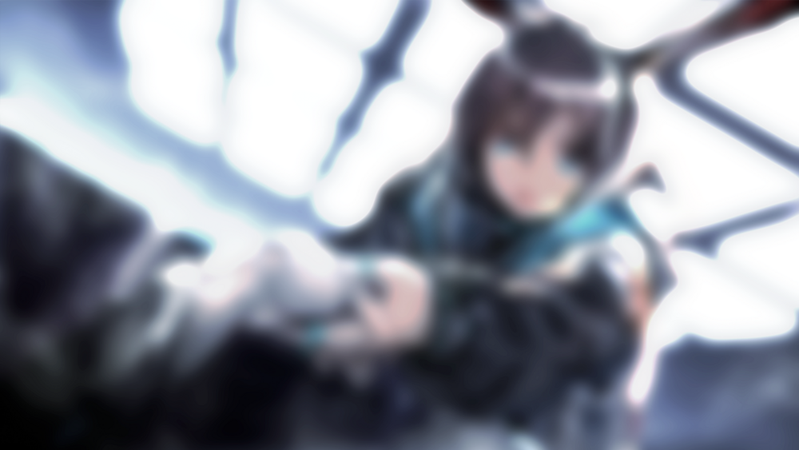
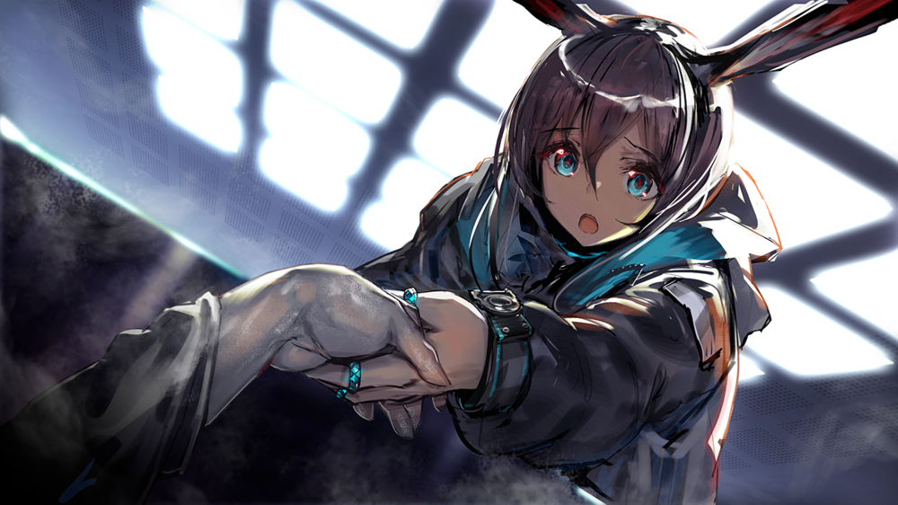
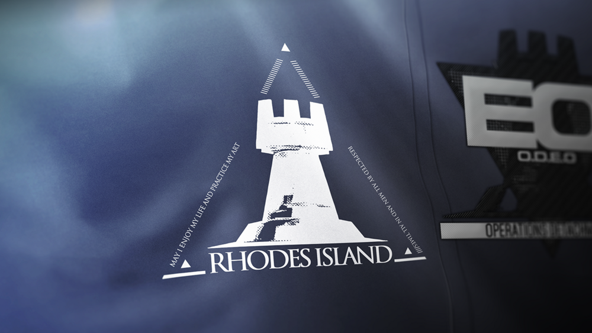

Ah, it's you
It's been a long time since we've last seen each other.
During this time... you've been teetering on the edge of a cliff.
You may have forgotten who you are, but just remembering your name is enough.
...It's time. Don't linger here for too long.
After all, you aren't my guest yet, nor should you even be here.
She still needs you.
December 23rd.
You may not remember what this date means to you.
And this will thrust you into peril.
[Background black]
...
No...
You must remember.
An EKG beeps in the background as sound of heartbeat is heard.
Distant Voice ...consciousness
Circulation resumed... vitals stabilized... cardioplegia solution injected...
The EKG beeps flatly
Distant Voice
Body temperature low... administering Hexamethasone 20 c.c., now...
...before beeping normally again
Distant Voice Get the hemostat!
...Conditions stable... beginning resection... be careful of VFib...
...Sorry...
For making you suffer again...
The sound of injection is heard as vision blacks out
[Background black]
??? ...
Doctor...
...hand!
Take my...
Take my hand!!


??? ...
Emergency...
...Help...
...It's done...!
[Background black]
??? Doctor,doctor!
Medic, how's doctor doing?
But, just a moment ago... we were holding hands...
So why... why is Doctor still not waking up...?
Medic Amiya! Don't panic, just calm down first!
Amiya Ah....S-sorry.
Medic You always get so flustered when it comes to the doctor.
But, Amiya, if the worst came to pass... what would you do then?
Amiya ...I'm already mentally prepared for that. We would continue to follow the plan.
Medic ...I understand. Anyway, I'll do what you requested.
Amiya All right... I appreciate it.
About the Doctor...
Medic Don't worry, Amiya. All the vital sign are stable now.
I'll do one more inspection, just for you.
Amiya Thank you... Thank you very much!
Medic Mhm. Breathing is slightly shallow, but blood pressure is normal. There should be no cause
for concern.
The person, who were only known as the Doctor, wakes up
Amiya ...!
Medic ...
Are you awake?
Amiya, it's a success! The Doctor has woken up!
Amiya Doctor...?
I'm so happy... Doctor...
Medic Ah, careful! You mustn't do that...
Don't try to move yet. Your body still hasn't fully adapted to this.
Amiya Doctor...?
Doctor Who... are you?
Amiya Ah, Doctor... It's me...
...
It's me, Amiya.
We've come to rescue you.
Doctor ...Who... am I...?
Amiya You...
You're a member of Rhodes Island, just like us...
...as well as my partner.
...Dr. SanKaiMoon.
You're the most important person to me.
Doctor... you don't remember?
Doctor ...Can i trust you?
Amiya ...
I understand. I know this is a bit much to take in right now.
I don't expect you to remember everything right away, and I'm not asking you to trust me right now.
Doctor ...
Amiya Doctor, do you really not remember me at all?
...
Even if that's the case... i won't give up.
We've already sacrified so much, just to find you...
Doctor I see, Pleased to meet you, Amiya.
Amiya Ah, um, hello.
...
I, I don't know how to put this, but so many things have changed from before.
That includes me as well.
Amiya However, you'll always be the most important person to me, Doctor. No matter what happens, this will never change.
So that's why, please... give me a little more time.
However little it might be...
Doctor ...
Medic Does the doctor... really have amnesia?
Amiya ...
I'm sure everything will be fine if we give Doctor some space...
Doctor Where is this...
Amiya It's safe here—

| COMMUNITY | SUPPORT | NEWS | MEDIA | ABOUT US |
|---|---|---|---|---|
| MSI Reward Program | Downloads | News | Brochure | About MSI |
| Forums | Member Center | Awards | Wallpaper | Mission and vision |
| Social Media | Online Customer Service | RSS | MSI Apps | Brand Story |
| Videos | Service Locations | Investor Information | ||
| Gaming Teams | Warranty | Innovation DNA | ||
| Blogs | CSR | |||
| Customer Stories |